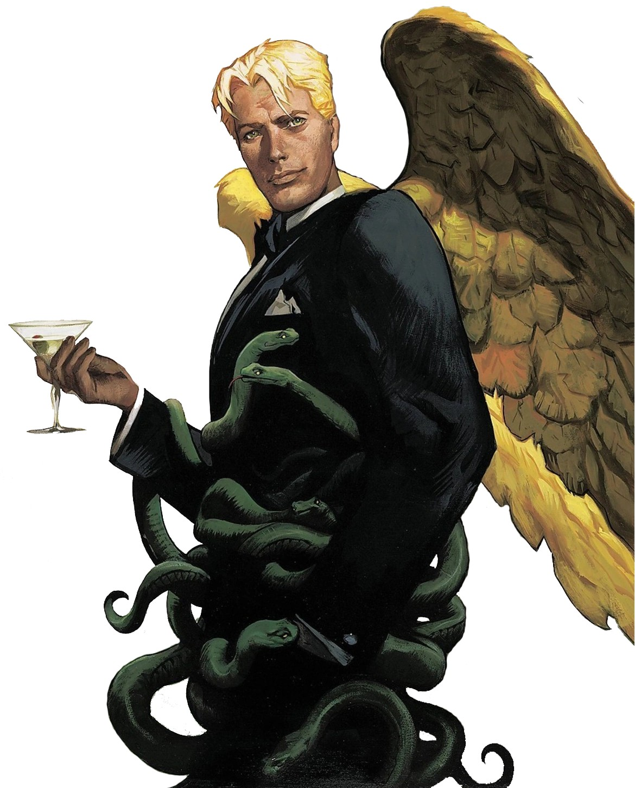

|
El nombre Lucifer proviene del latín lux ferre, que significa “portador de luz”.
Originalmente, este término no tenía ninguna connotación maligna, sino que se utilizaba para referirse al lucero del alba, el planeta Venus. Con el paso del tiempo, este nombre comenzó a asociarse con un ángel de gran belleza y poder, creado como uno de los seres más perfectos del cielo. Sin embargo, según la tradición, su orgullo lo llevó a rebelarse contra Dios, deseando alcanzar un poder igual o superior. Este acto de rebeldía marcó su destino para siempre. |
 |
|
Tras su rebelión, Lucifer fue derrotado y expulsado del cielo junto a otros ángeles caídos.
Desde ese momento, pasó a ser identificado con Satanás, el adversario, símbolo del mal y la tentación. No obstante, algunas interpretaciones sostienen que Lucifer representa más que maldad: simboliza la búsqueda del conocimiento, la independencia y el cuestionamiento de la autoridad. En la cultura moderna, esta dualidad ha hecho que sea visto no solo como un villano, sino también como un personaje complejo, incluso cercano al ser humano en sus emociones y conflictos. Ver video explicativo |
|